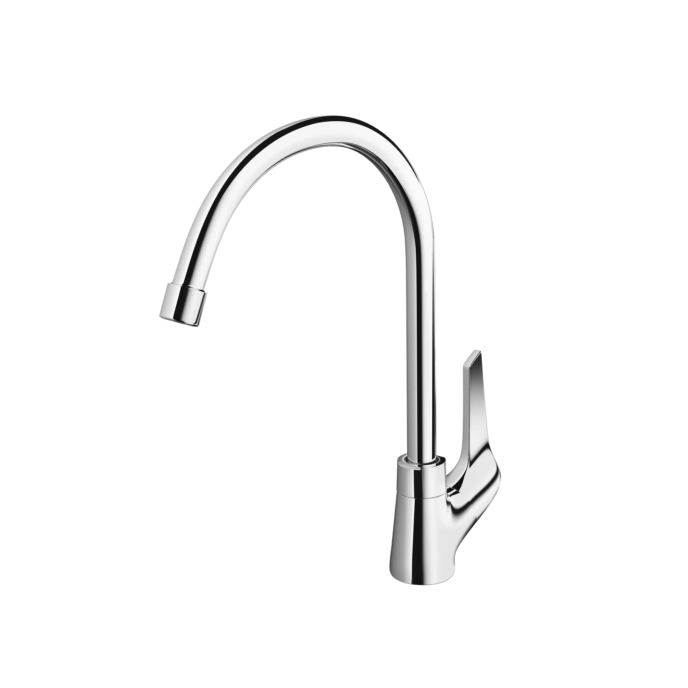
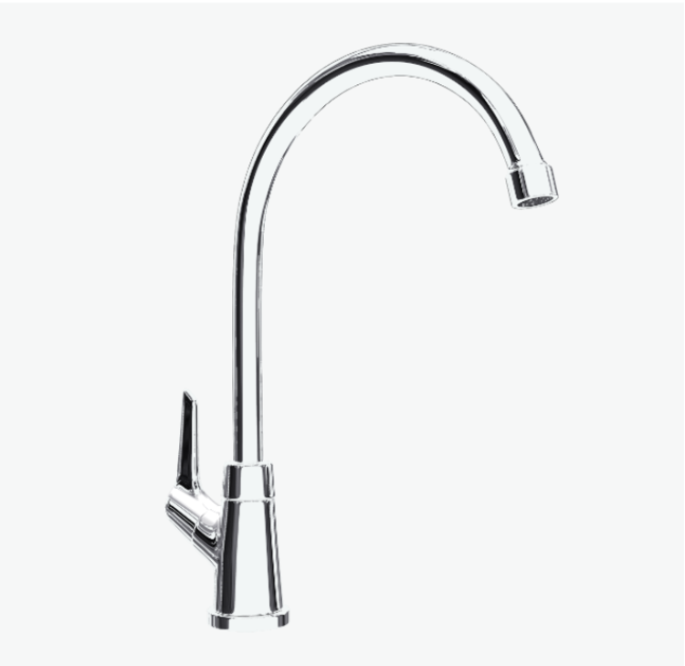
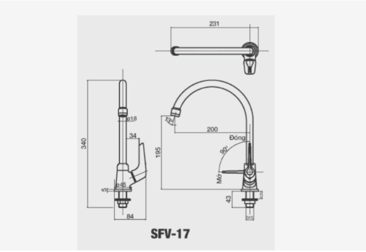

Vòi bếp SFV-17 không chỉ mang đến vẻ đẹp hiện đại cho gian bếp mà còn đáp ứng mọi nhu cầu sử dụng hàng ngày với hiệu năng vượt trội. Từ thiết kế cổ ngỗng sang trọng, chất liệu đồng thau mạ Crom-Niken bền đẹp, cho đến công nghệ van sứ chống rò rỉ và đầu phun bọt tiết kiệm nước, tất cả đều trở thành những yếu tố khẳng định chất lượng sản phẩm.Ưu điểm của vòi chậu rửa bếp SFV-17Thiết kế hiện đại, tiện dụngVòi SFV-17 sở hữu dáng cổ ngỗng cong cao, tạo sự sang trọng và hài hòa trong mọi không gian bếp.Thiết kế cao ráo giúp tạo khoảng trống thoải mái dưới vòi, giúp bạn dễ dàng rửa nồi, chảo, khay lớn mà không bị vướng víuThiết kế vòi xoay linh hoạt giữa hai bồn rửa giúp tối ưu không gian và nâng cao trải nghiệm sử dụng.Chất liệu cao cấp, an toàn cho sức khỏeSFV-17 được làm từ đồng thau nguyên chất, hạn chế nhiễm khuẩn, giữ cho nước luôn tinh khiết.Lớp mạ Crom-Niken sáng bóng không chỉ chống ăn mòn, gỉ sét mà còn duy trì độ mới lâu dài.Van sứ cao cấp chống mài mòn, đảm bảo độ bền vượt trội và khả năng chống rò rỉ hiệu quả.Công nghệ vận hành mượt màTay gạt được thiết kế êm ái, dễ thao tác cho phép điều chỉnh lưu lượng nước chỉ với một chạm nhẹ.Dòng nước chảy ra ổn định, nhanh chóng và không gây tiếng ồn khó chịu.Đầu phun bọt chống bắn, tạo dòng nước mềm mại, tiết kiệm nước và giữ cho bồn rửa chén luôn khô ráo, sạch sẽ.Tuổi thọ bền bỉ, tiết kiệm chi phíVới chất liệu và công nghệ tiên tiến, SFV-17 có tuổi thọ trên 10 năm, hạn chế hỏng hóc và chi phí bảo trì.Giá thành hợp lý, mang lại hiệu năng cao mà vẫn phù hợp với nhiều gia đình.Đây là lựa chọn thông minh cho những ai muốn đầu tư lâu dài nhưng vẫn cân đối chi phí.Thương hiệu INAX đạt chất lượng Nhật BảnVòi bếp SFV-17 thuộc thương hiệu thiết bị vệ sinh INAX đến từ Nhật Bản, nổi tiếng về độ bền và sự tinh xảo trong thiết kế. Mỗi sản phẩm đều được kiểm định nghiêm ngặt, mang đến sự yên tâm tuyệt đối cho người dùng.Ngoài ra, khách hàng còn được hỗ trợ tư vấn và bảo hành qua hotline 18006633, đảm bảo quyền lợi trong suốt quá trình sử dụng.Bản vẽ Vòi bếp SFV-17Thông số kỹ thuậtTên sản phẩmVòi bếp SFV-17DạngVòi bếp lạnhChất liệu- Van điều khiển bằng sứ có độ bền cao, chống rò rỉ nước - Chất liệu đồng thau không gây nhiễm khuẩn cho nước - Mạ Crom-NikenKích thước-Tính năng- Tay gạt êm ái, giúp nước nhanh chóng chảy ra và dễ dàng điều chỉnh nhiệt. - Tuổi thọ trên 10 năm. - Phun bọt chống bắn. - Giá thành tiết kiệmThương hiệuINAXThiết kế- Dạng cổ ngỗng giúp nước không bị bắn ra ngoài - Có thể xoay dễ dàng giữa 2 bồn rửa.Khác- Hotline tư vấn và bảo hành: 18006633
Vòi bếp SFV-17
Vòi bếp thương hiệu INAX.
Đã cập nhật danh sách yêu thích.
DANH MỤC: Vòi bếp
MÃ SẢN PHẨM: SFV-17
DEPTH: mm
HEIGHT: mm
WIDTH: mm
Vòi bếp SFV-17 không chỉ mang đến vẻ đẹp hiện đại cho gian bếp mà còn đáp ứng mọi nhu cầu sử dụng hàng ngày với hiệu năng vượt trội. Từ thiết kế cổ ngỗng sang trọng, chất liệu đồng thau mạ Crom-Niken bền đẹp, cho đến công nghệ van sứ chống rò rỉ và đầu phun bọt tiết kiệm nước, tất cả đều trở thành những yếu tố khẳng định chất lượng sản phẩm.Ưu điểm của vòi chậu rửa bếp SFV-17Thiết kế hiện đại, tiện dụngVòi SFV-17 sở hữu dáng cổ ngỗng cong cao, tạo sự sang trọng và hài hòa trong mọi không gian bếp.Thiết kế cao ráo giúp tạo khoảng trống thoải mái dưới vòi, giúp bạn dễ dàng rửa nồi, chảo, khay lớn mà không bị vướng víuThiết kế vòi xoay linh hoạt giữa hai bồn rửa giúp tối ưu không gian và nâng cao trải nghiệm sử dụng.Chất liệu cao cấp, an toàn cho sức khỏeSFV-17 được làm từ đồng thau nguyên chất, hạn chế nhiễm khuẩn, giữ cho nước luôn tinh khiết.Lớp mạ Crom-Niken sáng bóng không chỉ chống ăn mòn, gỉ sét mà còn duy trì độ mới lâu dài.Van sứ cao cấp chống mài mòn, đảm bảo độ bền vượt trội và khả năng chống rò rỉ hiệu quả.Công nghệ vận hành mượt màTay gạt được thiết kế êm ái, dễ thao tác cho phép điều chỉnh lưu lượng nước chỉ với một chạm nhẹ.Dòng nước chảy ra ổn định, nhanh chóng và không gây tiếng ồn khó chịu.Đầu phun bọt chống bắn, tạo dòng nước mềm mại, tiết kiệm nước và giữ cho bồn rửa chén luôn khô ráo, sạch sẽ.Tuổi thọ bền bỉ, tiết kiệm chi phíVới chất liệu và công nghệ tiên tiến, SFV-17 có tuổi thọ trên 10 năm, hạn chế hỏng hóc và chi phí bảo trì.Giá thành hợp lý, mang lại hiệu năng cao mà vẫn phù hợp với nhiều gia đình.Đây là lựa chọn thông minh cho những ai muốn đầu tư lâu dài nhưng vẫn cân đối chi phí.Thương hiệu INAX đạt chất lượng Nhật BảnVòi bếp SFV-17 thuộc thương hiệu thiết bị vệ sinh INAX đến từ Nhật Bản, nổi tiếng về độ bền và sự tinh xảo trong thiết kế. Mỗi sản phẩm đều được kiểm định nghiêm ngặt, mang đến sự yên tâm tuyệt đối cho người dùng.Ngoài ra, khách hàng còn được hỗ trợ tư vấn và bảo hành qua hotline 18006633, đảm bảo quyền lợi trong suốt quá trình sử dụng.Bản vẽ Vòi bếp SFV-17Thông số kỹ thuậtTên sản phẩmVòi bếp SFV-17DạngVòi bếp lạnhChất liệu- Van điều khiển bằng sứ có độ bền cao, chống rò rỉ nước - Chất liệu đồng thau không gây nhiễm khuẩn cho nước - Mạ Crom-NikenKích thước-Tính năng- Tay gạt êm ái, giúp nước nhanh chóng chảy ra và dễ dàng điều chỉnh nhiệt. - Tuổi thọ trên 10 năm. - Phun bọt chống bắn. - Giá thành tiết kiệmThương hiệuINAXThiết kế- Dạng cổ ngỗng giúp nước không bị bắn ra ngoài - Có thể xoay dễ dàng giữa 2 bồn rửa.Khác- Hotline tư vấn và bảo hành: 18006633
DANH MỤC: Vòi bếp
MÃ SẢN PHẨM: SFV-17
DEPTH: mm
HEIGHT: mm
WIDTH: mm